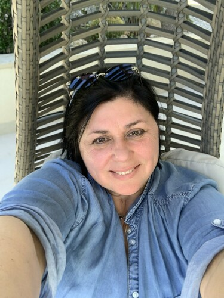
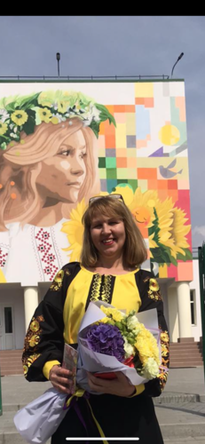
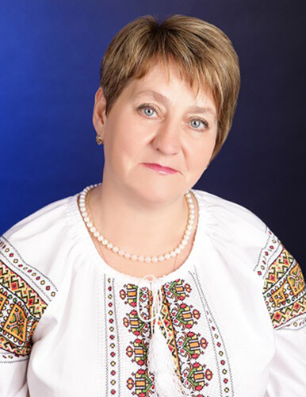
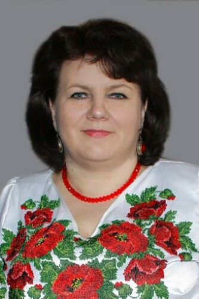
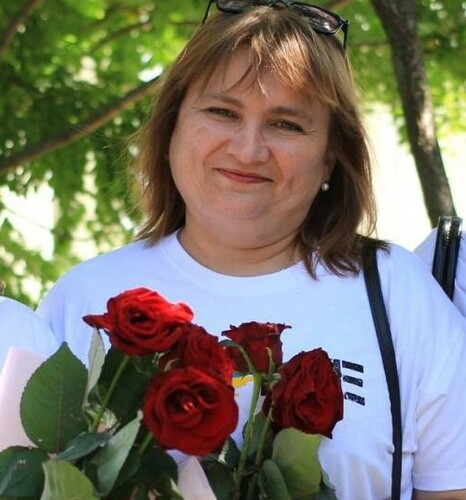
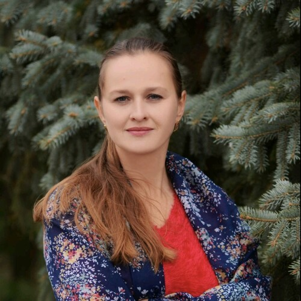
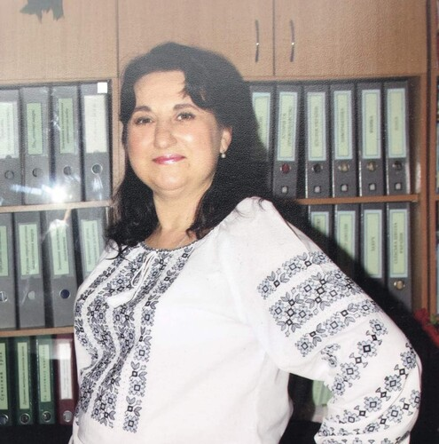

Повідомлення
Анжела Вакуленко, “Мистецтво в культурі минулого”
8В Мистецтво
17.06.2024 12:08


Лілія Мельник, “Інструктаж з техніки безпеки.Правила поведінки в закладі освіти.Вступ.Середні віки в історії людства.”
8В Всесвітня історія
09.06.2024 10:24

Наталія Нелюбова, “Повторення розділу 2 «Електричні явища. Електричний струм»”
8В Фізика
08.06.2024 11:48
Наталія Нелюбова, “Повторення розділу 1 «Теплові явища»”
8В Фізика
08.06.2024 11:48
Наталія Нелюбова, “Повторення розділу 1 «Теплові явища»”
8В Фізика
08.06.2024 11:47
Наталія Нелюбова, “Навчальний проєкт 6”
8В Фізика
08.06.2024 11:43
Наталія Нелюбова, “Навчальний проєкт 5”
8В Фізика
08.06.2024 11:42
Наталія Нелюбова, “Аналіз контрольної роботи. Навчальний проєкт 4”
8В Фізика
08.06.2024 11:41
Наталія Нелюбова, “Розв’язування задач. Підготовка до контрольної роботи”
8В Фізика
08.06.2024 11:40
Наталія Нелюбова, “Розв’язування задач. Самостійна робота 6”
8В Фізика
08.06.2024 11:39
Наталія Нелюбова, “Розв’язування задач”
8В Фізика
08.06.2024 11:38
Наталія Нелюбова, “Електричний струм у газах. Безпека людини під час роботи з електричними приладами й пристроями”
8В Фізика
08.06.2024 11:37
Наталія Нелюбова, “Розв’язування задач”
8В Фізика
08.06.2024 11:36
Наталія Нелюбова, “Розв’язування задач”
8В Фізика
08.06.2024 11:34
Наталія Нелюбова, “Закон Джоуля — Ленца. Електронагрівальні прилади”
8В Фізика
08.06.2024 11:33
Наталія Нелюбова, “Аналіз контрольної роботи. Робота й потужність електричного струму”
8В Фізика
08.06.2024 11:32
Наталія Нелюбова, “Контрольна робота 4 «Електричні явища. Електричний струм»”
8В Фізика
08.06.2024 11:31
Наталія Нелюбова, “Розв’язування задач. Підготовка до контрольної роботи”
8В Фізика
08.06.2024 11:29
Наталія Нелюбова, “Інструктаж з ТБ Лабораторна робота 4. Дослідження електричного кола з послідовним з’єднанням провідників”
8В Фізика
08.06.2024 11:26
Наталія Нелюбова, “Розв’язування задач”
8В Фізика
08.06.2024 11:24
Наталія Нелюбова, “Послідовне й паралельне з’єднання провідників”
8В Фізика
08.06.2024 11:23
Наталія Нелюбова, “Розв’язування задач. Самостійна робота 5”
8В Фізика
08.06.2024 11:22
Наталія Нелюбова, “Розв’язування задач”
8В Фізика
08.06.2024 11:21
Наталія Нелюбова, “Закон Ома для ділянки кола”
8В Фізика
08.06.2024 11:19
Наталія Нелюбова, “Електричний опір. Залежність опору провідника від його довжини, площі перерізу та матеріалу. Реостати”
8В Фізика
08.06.2024 11:18
Наталія Нелюбова, “Електрична напруга. Вольтметр”
8В Фізика
08.06.2024 11:17
Наталія Нелюбова, “Сила струму. Амперметр”
8В Фізика
08.06.2024 11:15
Наталія Нелюбова, “Струм у металах. Джерела електричного струму. Електричне коло та його основні елементи”
8В Фізика
08.06.2024 11:14
Наталія Нелюбова, “Аналіз контрольної роботи. Електричний струм. Дії електричного струму. Провідники, напівпровідники, діелектрики”
8В Фізика
08.06.2024 11:14
Наталія Нелюбова, “Контрольна робота 3 «Електричні явища. Електричний струм»”
8В Фізика
08.06.2024 11:11
Наталія Нелюбова, “Розв’язування задач. Підготовка до контрольної роботи”
8В Фізика
08.06.2024 11:10
Наталія Нелюбова, “Розв’язування задач. Самостійна робота 4”
8В Фізика
08.06.2024 11:09
Наталія Нелюбова, “Розв’язування задач”
8В Фізика
08.06.2024 11:08
Наталія Нелюбова, “Закон збереження електричного заряду. Електричне поле. Закон Кулона”
8В Фізика
08.06.2024 11:07
Наталія Нелюбова, “Електричні явища. Електризація тіл. Електричний заряд. Два види електричних зарядів. Взаємодія заряджених тіл”
8В Фізика
08.06.2024 11:06
Наталія Нелюбова, “Аналіз контрольнї роботи”
8В Геометрія
08.06.2024 10:19
Наталія Нелюбова, “Річна контрольна робота”
8В Геометрія
08.06.2024 10:17
Наталія Нелюбова, “Теорема Піфагора. Розв’язування прямокутних трикутників”
8В Геометрія
08.06.2024 10:16
Наталія Нелюбова, “Многокутники. Площі многокутників”
8В Геометрія
08.06.2024 10:15
Наталія Нелюбова, “Подібність трикутників.”
8В Геометрія
08.06.2024 10:13
Наталія Нелюбова, “Подібність трикутників.”
8В Геометрія
08.06.2024 10:13
Наталія Нелюбова, “Чотирикутники та їх властивості.”
8В Геометрія
08.06.2024 10:12
Наталія Нелюбова, “Чотирикутники та їх властивості.”
8В Геометрія
08.06.2024 10:11
Наталія Нелюбова, “Аналіз контрольної роботи”
8В Геометрія
08.06.2024 10:10
Наталія Нелюбова, “Контрольна робота 5”
8В Геометрія
08.06.2024 10:08
Наталія Нелюбова, “Узагальнення та систематизація знань з теми «Розв’язування прямокутних трикутників»”
8В Геометрія
08.06.2024 10:07
Наталія Нелюбова, “Узагальнення та систематизація знань з теми «Розв’язування прямокутних трикутників»”
8В Геометрія
08.06.2024 10:06
Наталія Нелюбова, “(ABC) Коригування та відпрацювання навичок з теми «Розв’язування прямокутних трикутників»”
8В Геометрія
08.06.2024 10:04
Наталія Нелюбова, “Розв’язування прямокутних трикутників. Самостійна робота 12”
8В Геометрія
08.06.2024 10:03
Наталія Нелюбова, “Розв’язування прямокутних трикутників”
8В Геометрія
08.06.2024 10:02
Наталія Нелюбова, “Значення синуса, косинуса та тангенса деяких кутів (30°, 60°, 45°)”
8В Геометрія
08.06.2024 10:01
Наталія Нелюбова, “Розв’язування задач на співвідношення між сторонами й кутами прямокутного трикутника. Самостійна робота 11”
8В Геометрія
08.06.2024 10:00
Наталія Нелюбова, “Розв’язування задач на співвідношення між сторонами й кутами прямокутного трикутника”
8В Геометрія
08.06.2024 09:59
Наталія Нелюбова, “Співвідношення між сторонами й кутами прямокутного трикутника”
8В Геометрія
08.06.2024 09:58
Наталія Нелюбова, “Тригонометрія. Синус, косинус і тангенс гострого кута прямокутного трикутника”
8В Геометрія
08.06.2024 09:57
Наталія Нелюбова, “Теорема Піфагора. Перпендикуляр і похила. Самостійна робота 10”
8В Геометрія
08.06.2024 09:56
Наталія Нелюбова, “Перпендикуляр і похила. Теоретичний залік 5Г”
8В Геометрія
08.06.2024 09:54
Наталія Нелюбова, “Аналіз контрольної роботи. Теорема Піфагора”
8В Геометрія
08.06.2024 09:53
Наталія Нелюбова, “Контрольна робота 4”
8В Геометрія
08.06.2024 09:51
Наталія Нелюбова, “(АВС) Коригування та відпрацювання навичок з теми «Площі многокутників»”
8В Геометрія
08.06.2024 09:50
Наталія Нелюбова, “Підсумковий урок з теми «Многокутники. Площі многокутників»”
8В Геометрія
08.06.2024 09:49
Наталія Нелюбова, “Розв’язування задач на обчислення площі трапеції. Відношення площ подібних трикутників”
8В Геометрія
08.06.2024 09:45
Наталія Нелюбова, “Площа трапеції. Площі многокутників”
8В Геометрія
08.06.2024 09:44
Наталія Нелюбова, “Площа трапеції”
8В Геометрія
08.06.2024 09:43
Наталія Нелюбова, “(АВС) Коригування та відпрацювання навичок з теми «Площа паралелограма, трикутника»”
8В Геометрія
08.06.2024 09:42
Наталія Нелюбова, “Розв’язування задач на обчислення площі паралелограма, трикутника. Самостійна робота 9”
8В Геометрія
08.06.2024 09:41
Наталія Нелюбова, “Площа паралелограма, трикутника”
8В Геометрія
08.06.2024 09:40
Наталія Нелюбова, “Площа паралелограма, трикутника”
8В Геометрія
08.06.2024 09:35
Наталія Нелюбова, “Розв’язування задач на обчислення площі прямокутника”
8В Геометрія
08.06.2024 09:34
Наталія Нелюбова, “Поняття площі многокутника. Основні властивості площі. Площа прямокутника”
8В Геометрія
08.06.2024 09:33
Наталія Нелюбова, “Ламана. Многокутник та його елементи. Сума кутів опуклого многокутника. Самостійна робота 8”
8В Геометрія
08.06.2024 09:32
Наталія Нелюбова, “Аналіз контрольної роботи. Ламана. Многокутник та його елементи. Сума кутів опуклого многокутника”
8В Геометрія
08.06.2024 09:31
Наталія Нелюбова, “Математична олімпіада”
8В Алгебра
07.06.2024 13:17
Наталія Нелюбова, “Математична олімпіада”
8В Алгебра
07.06.2024 13:16
Наталія Нелюбова, “Математична олімпіада”
8В Алгебра
07.06.2024 13:15
Наталія Нелюбова, “Узагальнення й систематизація знань та вмінь з тем, вивчених за курс восьмого класу. Віртуальна математична подорож Україною”
8В Алгебра
07.06.2024 13:14
Наталія Нелюбова, “Узагальнення й систематизація знань та вмінь з тем, вивчених за курс восьмого класу. Віртуальна математична подорож Україною”
8В Алгебра
07.06.2024 13:13
Наталія Нелюбова, “Узагальнення й систематизація знань та вмінь з тем, вивчених за курс восьмого класу. Віртуальна математична подорож Україною”
8В Алгебра
07.06.2024 13:12
Наталія Нелюбова, “Узагальнення й систематизація знань та вмінь з тем, вивчених за курс восьмого класу. Віртуальна математична подорож Україною”
8В Алгебра
07.06.2024 13:09
Наталія Нелюбова, “Узагальнення й систематизація знань та вмінь з тем, вивчених за курс восьмого класу. Віртуальна математична подорож Україною”
8В Алгебра
07.06.2024 13:08
Наталія Нелюбова, “Узагальнення й систематизація знань та вмінь з тем, вивчених за курс восьмого класу. Віртуальна математична подорож Україною”
8В Алгебра
07.06.2024 13:07
Наталія Нелюбова, “Узагальнення й систематизація знань та вмінь з тем, вивчених за курс восьмого класу. Віртуальна математична подорож Україною”
8В Алгебра
07.06.2024 13:06
Наталія Нелюбова, “Узагальнення й систематизація знань та вмінь з тем, вивчених за курс восьмого класу. Віртуальна математична подорож Україною”
8В Алгебра
07.06.2024 13:05
Наталія Нелюбова, “Узагальнення й систематизація знань та вмінь з тем, вивчених за курс восьмого класу. Віртуальна математична подорож Україною”
8В Алгебра
07.06.2024 12:59
Наталія Нелюбова, “Аналіз контрольної роботи”
8В Алгебра
07.06.2024 12:56
Наталія Нелюбова, “Річна контрольна робота”
8В Алгебра
07.06.2024 12:54
Наталія Нелюбова, “Функції та їх графіки”
8В Алгебра
07.06.2024 12:53
Наталія Нелюбова, “Функції та їх графіки”
8В Алгебра
07.06.2024 12:52
Наталія Нелюбова, “Квадратні корені. Дійсні числа”
8В Алгебра
07.06.2024 12:50
Наталія Нелюбова, “Квадратні корені. Дійсні числа”
8В Алгебра
07.06.2024 12:49
Наталія Нелюбова, “Раціональні вирази”
8В Алгебра
07.06.2024 12:45
Наталія Нелюбова, “Раціональні вирази”
8В Алгебра
07.06.2024 12:44
Наталія Нелюбова, “Аналіз контрольної роботи”
8В Алгебра
07.06.2024 12:43
Наталія Нелюбова, “Контрольна робота 6”
8В Алгебра
07.06.2024 12:41
Наталія Нелюбова, “(АВС) Коригування та відпрацювання навичок і з теми «Розв’язування задач за допомогою квадратних рівнянь та рівнянь, що зводяться до квадратних»”
8В Алгебра
07.06.2024 12:40
Наталія Нелюбова, “Розв’язування задач за допомогою квадратних рівнянь. Нестандартні задачі. Самостійна робота 21”
8В Алгебра
07.06.2024 12:39
Наталія Нелюбова, “Розв’язування задач за допомогою квадратних рівнянь. Задачі геометричного змісту”
8В Алгебра
07.06.2024 12:38
Наталія Нелюбова, “Розв’язування задач за допомогою квадратних рівнянь. Задачі на рух”
8В Алгебра
07.06.2024 12:37
Наталія Нелюбова, “Розв’язування задач за допомогою квадратних рівнянь. Задачі на рух”
8В Алгебра
07.06.2024 12:36
Наталія Нелюбова, “Розв’язування рівнянь, що зводяться до квадратних. Самостійна робота 20”
8В Алгебра
07.06.2024 12:35
Наталія Нелюбова, “Розв’язування рівнянь, що зводяться до квадратних. Самостійна робота 20”
8В Алгебра
07.06.2024 12:34
Наталія Нелюбова, “Розв’язування рівнянь, що зводяться до квадратних”
8В Алгебра
07.06.2024 12:33
Наталія Нелюбова, “Розв’язування рівнянь, що зводяться до квадратних”
8В Алгебра
07.06.2024 12:32
Наталія Нелюбова, “Розв’язування рівнянь, що зводяться до квадратних”
8В Алгебра
07.06.2024 12:31
Наталія Нелюбова, “Розкладання квадратного тричлена на лінійні множники”
8В Алгебра
07.06.2024 12:30
Наталія Нелюбова, “Розкладання квадратного тричлена на лінійні множники. Самостійна робота 19”
8В Алгебра
07.06.2024 12:29
Наталія Нелюбова, “Розкладання квадратного тричлена на лінійні множники”
8В Алгебра
07.06.2024 12:28
Наталія Нелюбова, “Розкладання квадратного тричлена на лінійні множники”
8В Алгебра
07.06.2024 12:26
Наталія Нелюбова, “Квадратний тричлен та його корені. Розкладання квадратного тричлена на лінійні множники”
8В Алгебра
07.06.2024 12:25
Наталія Нелюбова, “Аналіз контрольної роботи”
8В Алгебра
07.06.2024 12:24
Наталія Нелюбова, “Контрольна робота 5”
8В Алгебра
07.06.2024 12:23
Наталія Нелюбова, “(АВС) Коригування та відпрацювання навичок з теми «Квадратні рівняння»”
8В Алгебра
07.06.2024 12:22
Наталія Нелюбова, “Теорема Вієта та теорема, обернена до теореми Вієта. Самостійна робота 18”
8В Алгебра
07.06.2024 12:20
Наталія Нелюбова, “Теорема Вієта та теорема, обернена до теореми Вієта”
8В Алгебра
07.06.2024 12:19
Наталія Нелюбова, “Теорема Вієта та теорема, обернена до теореми Вієта”
8В Алгебра
07.06.2024 12:18
Наталія Нелюбова, “Теорема Вієта та теорема, обернена до теореми Вієта”
8В Алгебра
07.06.2024 12:17
Наталія Нелюбова, “(АВС) Коригування та відпрацювання навичок з теми «Розв’язування квадратних рівнянь»”
8В Алгебра
07.06.2024 12:16
Наталія Нелюбова, “Формула коренів квадратного рівняння. Самостійна робота 17”
8В Алгебра
07.06.2024 12:14
Наталія Нелюбова, “Формула коренів квадратного рівняння”
8В Алгебра
07.06.2024 12:13
Наталія Нелюбова, “Формула коренів квадратного рівняння”
8В Алгебра
07.06.2024 12:03
Наталія Нелюбова, “Розв’язування неповних квадратних рівнянь”
8В Алгебра
07.06.2024 11:45
Наталія Нелюбова, “Означення квадратного рівняння. Неповні квадратні рівняння та їх розв’язування”
8В Алгебра
07.06.2024 11:44
Наталія Нелюбова, “Аналіз контрольної роботи”
8В Алгебра
07.06.2024 11:43
Наталія Нелюбова, “Контрольна робота 4”
8В Алгебра
07.06.2024 11:42
Наталія Нелюбова, “(АВС) Коригування та відпрацювання навичок із теми «Тотожні перетворення виразів, що містять квадратні корені»”
8В Алгебра
07.06.2024 11:40
Наталія Нелюбова, “Систематизація та узагальнення знань з теми «Тотожні перетворення виразів, що містять квадратні корені»”
8В Алгебра
07.06.2024 11:37
Наталія Нелюбова, “Функція y =х2 , її графік та властивості. Рівняння виду . Самостійна робота 16”
8В Алгебра
07.06.2024 11:36
Наталія Нелюбова, “Функція y = х2, її графік та властивості. Рівняння виду .”
8В Алгебра
07.06.2024 11:34
Наталія Нелюбова, “Тотожні перетворення виразів, що містять квадратні корені. Самостійна робота 15”
8В Алгебра
07.06.2024 11:33
Наталія Нелюбова, “Тотожні перетворення виразів, що містять квадратні корені”
8В Алгебра
07.06.2024 11:32
Наталія Нелюбова, “Тотожні перетворення виразів, що містять квадратні корені”
8В Алгебра
07.06.2024 11:31
Наталія Нелюбова, “Тотожні перетворення виразів, що містять квадратні корені”
8В Алгебра
07.06.2024 11:29
Наталія Нелюбова, “Винесення множника з-під знака кореня. Внесення множника під знак кореня. Самостійна робота 14”
8В Алгебра
07.06.2024 11:28
Наталія Нелюбова, “Винесення множника з-під знака кореня”
8В Алгебра
07.06.2024 11:27
Наталія Нелюбова, “Винесення множника з-під знака кореня”
8В Алгебра
07.06.2024 11:24
Наталія Нелюбова, “Тотожність”
8В Алгебра
07.06.2024 11:22
Наталія Нелюбова, “Аналіз контрольної роботи”
8В Алгебра
07.06.2024 11:20
Наталія Нелюбова, “Контрольна робота 3”
8В Алгебра
07.06.2024 11:19
Наталія Нелюбова, “(АВС) Коригування та відпрацювання навичок із тем «Основна тотожність квадратного кореня. Арифметичний квадратний корінь з добутку, дробу та степеня. Добуток та частка квадратних коренів»”
8В Алгебра
07.06.2024 11:18
Наталія Нелюбова, “Основна тотожність квадратного кореня. Арифметичний квадратний корінь з добутку, дробу та степеня. Добуток та частка квадратних коренів. Самостійна робота 13”
8В Алгебра
07.06.2024 11:17
Наталія Нелюбова, “Основна тотожність квадратного кореня. Арифметичний квадратний корінь з добутку, дробу та степеня. Добуток та частка квадратних коренів”
8В Алгебра
07.06.2024 11:12
Наталія Нелюбова, “Арифметичний квадратний корінь з добутку, дробу та степеня. Добуток та частка квадратних коренів”
8В Алгебра
07.06.2024 11:10
Наталія Нелюбова, “Числові множини. Раціональні числа, ірраціональні числа, дійсні числа. Етапи розвитку числа. Самостійна робота 12”
8В Алгебра
07.06.2024 11:09
Наталія Нелюбова, “Рівняння виду х 2 = а”
8В Алгебра
07.06.2024 11:08
Наталія Нелюбова, “Квадратний корінь. Арифметичний квадратний корінь”
8В Алгебра
07.06.2024 11:07
Наталія Нелюбова, “Функція у = х 2 , її графік та властивості”
8В Алгебра
07.06.2024 11:06
Наталія Нелюбова, “Функція у = х 2 , її графік та властивості”
8В Алгебра
07.06.2024 11:05
Анжела Вакуленко, “Українські пам'ятки класицизму”
8В Мистецтво
06.06.2024 09:53
Тетяна Пономаренко, “Основи. Фізичні властивості, поширення та застосування основ. Одержання основ”
8В Хімія
04.06.2024 16:09

Тетяна Пономаренко, “Діагностичний урок. Самостійна робота. Кислоти”
8В Хімія
04.06.2024 16:05
Інна Бадьора, “Підсумковий урок. Аналіз опрацьованих творів, зображених у них життєвих ситуацій і людських вчинків”
8В Українська література
03.06.2024 18:47

Анжела Вакуленко, “Віртуальна мандрівка до музеїв світу”
8В Мистецтво
03.06.2024 10:19
Тетяна Пономаренко, “Підсумковий урок”
8В Хімія
31.05.2024 20:42
Ірина Поліщук, “Узагальнення та систематизація вивченого.”
8В Зарубіжна література
29.05.2024 13:03
Ірина Поліщук, “Узагальнення та систематизація вивченого.”
8В Зарубіжна література
29.05.2024 13:02
Ольга Гриб, “Мої підсумки.”
8В Навчаємося разом
27.05.2024 16:05

Ірина Поліщук, “ПЧ Загальнолюдські цінності твору "Вафельне серце".”
8В Зарубіжна література
24.05.2024 08:52
Тетяна Пономаренко, “Хімічний калейдоскоп”
8В Хімія
23.05.2024 16:03
Тетяна Пономаренко, “Повторення матеріалу за 8 клас”
8В Хімія
23.05.2024 16:01
Тетяна Пономаренко, “Хімічна вікторина”
8В Хімія
23.05.2024 16:00
Ольга Золотоверх, “Правила ТБ. Різновиди ходьби та бігу.ЗРВ. Удари по воротах-к.н.Гра в нападі та захисті.”
8В Фізична культура
23.05.2024 02:33
Ольга Золотоверх, “Правила ТБ. Різновиди ходьби та бігу.ЗРВ. Біг з високим піднімання стегна.”
8В Фізична культура
23.05.2024 02:32
Ольга Золотоверх, “Правила ТБ. Різновиди ходьби та бігу.ЗРВ. Присідання на правій та лівій нозі.”
8В Фізична культура
23.05.2024 02:30
Ольга Золотоверх, “Правила ТБ. Різновиди ходьби та бігу.ЗРВ. Стрибки через скакалку.”
8В Фізична культура
23.05.2024 02:28
Ольга Золотоверх, “Правила ТБ. Різновиди ходьби та бігу.ЗРВ. Передачі м'яча на точність- к.н. Гра в нападі та захисті.”
8В Фізична культура
23.05.2024 02:27
Ольга Золотоверх, “Правила ТБ. Різновиди ходьби та бігу.ЗРВ. Вкидання м'яча на дальність. Обведення перешкод з подальшим ударом по воротах. Гра воротаря.”
8В Фізична культура
23.05.2024 02:26
Ольга Золотоверх, “Правила ТБ. Різновиди ходьби та бігу.ЗРВ. Підсумковий урок за ІІ семестр та рік.”
8В Фізична культура
23.05.2024 02:25
Ірина Поліщук, “ПЧ Марія Парр. Повість "Вафельне серце". Світ головних героїв, сприйняття реальності та міфів.”
8В Зарубіжна література
22.05.2024 20:33
Ольга Панасюк, “Вікторина " Організм людини".”
8В Біологія
22.05.2024 12:41

Ольга Панасюк, “Олімпіадні перегони.”
8В Біологія
22.05.2024 12:40
Ольга Панасюк, “Вікторина " Найрозумніший".”
8В Біологія
22.05.2024 12:38
Ольга Панасюк, “Повторення вивченого за II семестр.”
8В Біологія
22.05.2024 12:38
Анжела Вакуленко, “Стилі і напрями в різних видах мистецтва”
8В Мистецтво
22.05.2024 09:09
Ольга Золотоверх, “Правила ТБ. Різновиди ходьби та бігу.ЗРВ. Передачі м'яча в парах. Гра в нападі та захисті. Штрафний удар.”
8В Фізична культура
20.05.2024 16:41
Ірина Поліщук, “Контрольна робота. Розгорнута відповідь на запитання.”
8В Зарубіжна література
20.05.2024 12:59
Наталія Петровська, “Інструктаж з БЖД. Повторення і систематизація навчального матеріалу за рік. (ДН)”
8В Інформатика
20.05.2024 10:41
Наталія Петровська, “Інструктаж з БЖД. Захист навчальних проєктів. (ДН)”
8В Інформатика
20.05.2024 10:36
Наталія Петровська, “Інструктаж з БЖД. Розв’язування компетентнісних задач. (ДН)”
8В Інформатика
20.05.2024 10:32
Наталія Петровська, “Інструктаж з БЖД. Практична робота 12. «Проєкти із циклами». Тематичне оцінювання. (ДН)”
8В Інформатика
20.05.2024 10:28
Ольга Гриб, “Відповідальність.”
8В Навчаємося разом
20.05.2024 07:42
Анжела Вакуленко, “Романтизм за реалізм у світовій культурі”
8В Мистецтво
17.05.2024 12:50
Тетяна Пономаренко, “Узагальнення знань з курсу хімії 8 класу”
8В Хімія
16.05.2024 15:04
Ольга Панасюк, “Організм людини як цілісна система”
8В Біологія
16.05.2024 12:58
Ольга Панасюк, “Контрольна робота 5”
8В Біологія
16.05.2024 12:55
Тетяна Пономаренко, “Захист проєктів”
8В Хімія
16.05.2024 11:29
Ірина Поліщук, “Художній конфлікт і можливість його подолання в повісті "Чайка Джонатан Лівінгстон".”
8В Зарубіжна література
15.05.2024 13:23
Тетяна Пономаренко, “Аналітично-коригувальний урок”
8В Хімія
15.05.2024 11:11
Ольга Золотоверх, “Правила ТБ. Різновиди ходьби та бігу.ЗРВ. Передачі м'яча в парах. Вкидання м'яча на дальність. Гра в нападі та захисті. Штрафний кидок.”
8В Фізична культура
14.05.2024 14:31
Ірина Поліщук, “Утілення прагнень до високої мети в образі чайки Джонатана.”
8В Зарубіжна література
13.05.2024 10:38
Наталія Петровська, “Інструктаж з БЖД. Цикли з передумовою”
8В Інформатика
13.05.2024 09:48
Ольга Гриб, “Проактивність.”
8В Навчаємося разом
13.05.2024 08:21
Ольга Панасюк, “Сон. Біоритми”
8В Біологія
09.05.2024 12:12
Ольга Панасюк, “Мислення та свідомість”
8В Біологія
09.05.2024 12:11
Аліна Кравченко, “Reported speech. Непряма мова. Узгодження часових форм. Розвиток граматичних навичок. Тренувальні вправи.”
8В Англійська мова
09.05.2024 09:24
Ірина Поліщук, “Алегоричні образи твору Річарда Баха.”
8В Зарубіжна література
08.05.2024 15:19
Анжела Вакуленко, “Романтизм і реалізм в українському мистецві”
8В Мистецтво
08.05.2024 13:45
Тетяна Пономаренко, “Основні класи неорганічних сполук (узагальнення)”
8В Хімія
08.05.2024 11:35
Інна Бадьора, “Урок мовленнєвого розвитку. Інтерв’ю в публіцистичному стилі”
8В Українська мова
07.05.2024 22:54
Інна Бадьора, “Узагальнення з теми «Речення з відокремленими членами»”
8В Українська мова
07.05.2024 22:52
Ірина Поліщук, “Річард Бах. Сюжет повісті-притчі "Чайка Джонатан Лівінгстон" як філософська метафора людського буття.”
8В Зарубіжна література
06.05.2024 11:09
Ольга Золотоверх, “Правила ТБ. Різновиди ходьби та бігу.ЗРВ. Гра воротаря.”
8В Фізична культура
06.05.2024 11:09
Ольга Золотоверх, “Правила ТБ. Різновиди ходьби та бігу.ЗРВ. Жонглювання м'ячем.”
8В Фізична культура
06.05.2024 11:09
Ольга Золотоверх, “Правила ТБ. Різновиди ходьби та бігу.ЗРВ. Біг з високим піднімання стегна.”
8В Фізична культура
06.05.2024 11:08
Ольга Гриб, “Проактивність.”
8В Навчаємося разом
06.05.2024 11:04
Наталія Нелюбова, “Контрольна робота 5 «Електричні явища. Електричний струм»”
8В Фізика
06.05.2024 10:27
Наталія Петровська, “Інструктаж з БЖД. Цикли з передумовою. (ДН)”
8В Інформатика
06.05.2024 09:48
Наталія Петровська, “Інструктаж з БЖД. Оператори циклу. Цикли з лічильником. (ДН)”
8В Інформатика
06.05.2024 09:46
Аліна Кравченко, “Self-check. Узагальнююче повторення вивчених лексичних одиниць та граматичних структур з теми. Лексико-граматичний тест.”
8В Англійська мова
03.05.2024 12:48
Тетяна Пономаренко, “Аналітично-коригувальний урок”
8В Хімія
02.05.2024 17:21
Ольга Панасюк, “Мова. Навчання й пам’ять”
8В Біологія
02.05.2024 13:23
Ольга Панасюк, “Рефлекси. Інстинкти”
8В Біологія
02.05.2024 13:18
Лариса Гуленко, “Національний склад населення України”
8В Географія
02.05.2024 10:17

Аліна Кравченко, “Revision. Виконання лексичних та граматичних вправ на повторення.”
8В Англійська мова
02.05.2024 09:33
Анжела Вакуленко, “Стиль реалізм у живопису, музиці та театральному мистецтві”
8В Мистецтво
01.05.2024 15:32
Ірина Поліщук, “Художні образи повісті "Маленький принц".”
8В Зарубіжна література
01.05.2024 13:22
Ольга Золотоверх, “Первинний інструктаж з ТБ під час занять футболом. Різновиди ходьби та бігу.ЗРВ. Передачі м'яча в парах. Обведення перешкод. Удари по воротах. Гра.”
8В Фізична культура
01.05.2024 10:01
Ольга Золотоверх, “Правила ТБ. Стрибково-бігові вправи.ЗРВ. Стрибок у довжину з місця - к.н. Метання малого м'ячика. Ігри за вподобаннями.”
8В Фізична культура
30.04.2024 15:25
Лариса Гуленко, “Національний склад населення України”
8В Географія
30.04.2024 09:43
Наталія Петровська, “Інструктаж з БЖД. Оператори циклу. Цикли з лічильником”
8В Інформатика
30.04.2024 08:15
Ольга Золотоверх, “Правила ТБ. Стрибково-бігові вправи.ЗРВ. Біг 30 м. -к.н. Ігри за вподобаннями.”
8В Фізична культура
29.04.2024 12:28
Ольга Золотоверх, “Правила ТБ. Стрибково-бігові вправи.ЗРВ. Стрибок у довжину з місця- к.н. Ігри за вподобаннями.”
8В Фізична культура
29.04.2024 12:27
Ольга Гриб, “учимося реагувати на критику”
8В Навчаємося разом
29.04.2024 10:36
Наталія Петровська, “Інструктаж з БЖД. Оператори циклу. Цикли з лічильником”
8В Інформатика
29.04.2024 09:40
Аліна Кравченко, “Наукова фантастика. Космос в літературі та кінематографі. Обговорення. Робота в групах.”
8В Англійська мова
26.04.2024 13:42
Анжела Вакуленко, “Стиль реалізм”
8В Мистецтво
26.04.2024 09:33
Ольга Панасюк, “Вища нервова діяльність. Робота головного мозку”
8В Біологія
25.04.2024 13:41
Ольга Панасюк, “Проблеми репродуктивної системи”
8В Біологія
25.04.2024 13:40
Ірина Поліщук, “Філософський зміст твору Антуана де Сент-Екзюпері.”
8В Зарубіжна література
25.04.2024 13:20
Лариса Гуленко, “Урбанізація Етноси. Найпоширеніші мовні сім’ї. Самостійна робота 18”
8В Географія
25.04.2024 12:46
Тетяна Пономаренко, “Практична робота 2. Розв’язування експериментальних задач. Інструктаж з БЖД”
8В Хімія
25.04.2024 11:13
Тетяна Пономаренко, “Контрольна робота. Узагальнення знань з курсу хімії 8 класу”
8В Хімія
25.04.2024 10:29
Тетяна Пономаренко, “Практична робота 2. Розв’язування експериментальних задач. Інструктаж з БЖД”
8В Хімія
25.04.2024 10:25
Аліна Кравченко, “Can you run a marathon in space? Спорт у космосі. Читання тексту. Виконання післятекстових завдань.”
8В Англійська мова
25.04.2024 09:18
Ірина Поліщук, “Людські взаємини, моральні цінності в казці-притчі "Маленький принц".”
8В Зарубіжна література
24.04.2024 20:55
Тетяна Пономаренко, “Розрахунки за хімічними рівняннями. Експериментальні задачі”
8В Хімія
24.04.2024 11:54
Лариса Гуленко, “Міські й сільські населені пункти. Самостійна робота 17”
8В Географія
23.04.2024 11:09
Ольга Золотоверх, “Правила ТБ. Стрибково-бігові вправи.ЗРВ. Присідання з вистрибуванням.”
8В Фізична культура
23.04.2024 10:52
Ольга Золотоверх, “Правила ТБ. Стрибково-бігові вправи.ЗРВ. Багатоскоки на одній нозі.”
8В Фізична культура
23.04.2024 10:51
Ольга Золотоверх, “Правила ТБ. Стрибково-бігові вправи.ЗРВ. Присідання на правій та лівій нозі.”
8В Фізична культура
23.04.2024 10:50
Наталія Петровська, “Інструктаж з БЖД. Практична робота 11. «Проєкти з розгалуженнями». (ДН)”
8В Інформатика
23.04.2024 10:02
Аліна Кравченко, “Vocabulary in action. Активізація вивчених лексичних одиниць. Вправи на засвоєння лексичного матеріалу з теми.”
8В Англійська мова
22.04.2024 12:47
Ольга Гриб, “Самооцінка та критика.”
8В Навчаємося разом
22.04.2024 11:03
Наталія Петровська, “Інструктаж з БЖД. Перемикачі. (ДН)”
8В Інформатика
22.04.2024 10:55
Тетяна Пономаренко, “Практична робота 1. Дослідження властивостей основних класів неорганічних сполук. Інструктаж з БЖД”
8В Хімія
20.04.2024 21:37
Тетяна Пономаренко, “Генетичні зв’язки між основними класами неорганічних сполук”
8В Хімія
20.04.2024 21:36
Лариса Гуленко, “Густота населення світу й України”
8В Географія
19.04.2024 13:45
Аліна Кравченко, “Попередження та заборони. Сталі вирази. Прослуховування та інсценування діалогу.”
8В Англійська мова
19.04.2024 12:59
Ольга Панасюк, “Розвиток людини”
8В Біологія
19.04.2024 10:19
Ірина Поліщук, “Антуан де Сент-Екзюпері. Життєвий й творчий шлях письменника.”
8В Зарубіжна література
18.04.2024 16:06
Ольга Панасюк, “Робота репродуктивної системи”
8В Біологія
18.04.2024 13:44
Аліна Кравченко, “Висадка на Місяць: факт, чи вигадка? Читання тексту. Виконання післятекстових завдань. Третій тип умовних речень (тренувальні вправи).”
8В Англійська мова
18.04.2024 09:31
Ірина Поліщук, “Контрольна робота. Відродження. Бароко і класицизм. Різнорівнені завдання.”
8В Зарубіжна література
17.04.2024 15:37
Анжела Вакуленко, “Стиль романтизм у музиці та театрі”
8В Мистецтво
17.04.2024 13:07
Тетяна Пономаренко, “Хімічні властивості солей”
8В Хімія
17.04.2024 11:21
Ольга Золотоверх, “Правила ТБ. Стрибково-бігові вправи.ЗРВ. Стрибок у довжину з місця. Біг 800 м. Метання малого м'ячика. Ігри за вподобаннями.”
8В Фізична культура
17.04.2024 10:17
Ольга Золотоверх, “Правила ТБ. Стрибково-бігові вправи.ЗРВ. Стрибок у довжину з місця. Біг 30 м.Метання малого м'ячика. Ігри за вподобаннями.”
8В Фізична культура
17.04.2024 10:16
Наталія Петровська, “Інструктаж з БЖД. Прапорці”
8В Інформатика
16.04.2024 09:54
Лариса Гуленко, “Українська діаспора. Самостійна робота 16”
8В Географія
16.04.2024 09:08
Ірина Поліщук, “РМ (усно). Читання п'єси Мольєра у ролях.”
8В Зарубіжна література
15.04.2024 16:58
Ольга Золотоверх, “Правила ТБ. Стрибково-бігові вправи.ЗРВ. Стрибок у довжину з місця. "Човниковий біг " 4×9 м. Метання малого м'ячика. Ігри за вподобаннями.”
8В Фізична культура
15.04.2024 13:26
Аліна Кравченко, “Third conditional. Третій тип умовних речень. Особливості вживання та граматичної побудови. Говоримо про нереальні події, які могли б трапитися в минулому.”
8В Англійська мова
15.04.2024 12:43
Наталія Нелюбова, “Природа електричного струму в розчинах і розплавах електролітів. Закон Фарадея для електролізу”
8В Фізика
15.04.2024 11:16
Ольга Гриб, “Учимося конструктивно критикувати.”
8В Навчаємося разом
15.04.2024 10:37
Наталія Петровська, “Інструктаж з БЖД. Розв'язування задач з використанням розгалуження”
8В Інформатика
15.04.2024 09:16
Лариса Гуленко, “Механічний рух населення”
8В Географія
12.04.2024 11:02
Ольга Панасюк, “Репродуктивна система. Будова репродуктивної системи”
8В Біологія
11.04.2024 12:55
Ольга Панасюк, “Контрольна робота 4”
8В Біологія
11.04.2024 11:56
Аліна Кравченко, “Міри довжини. Сталі вирази. Цифри та числа. Читання тексту про космос, виконання післятекстових завдань.”
8В Англійська мова
11.04.2024 09:19
Ірина Поліщук, “Тематика і проблематиа твору "Міщанин-шляхтич". Його загальнолюдське значення. Основні образи комедії.”
8В Зарубіжна література
10.04.2024 20:30
Анжела Вакуленко, “Стиль романтизм у живопису”
8В Мистецтво
10.04.2024 13:11
Тетяна Пономаренко, “Солі. Фізичні властивості, поширення та застосування солей. Способи одержання солей”
8В Хімія
10.04.2024 11:27
Ольга Золотоверх, “Правила ТБ. Стрибково-бігові вправи.ЗРВ. Спеціальні вправи для метання.”
8В Фізична культура
10.04.2024 11:04
Ольга Золотоверх, “Правила ТБ. Стрибково-бігові вправи.ЗРВ. Присідання з вистрибуванням.”
8В Фізична культура
10.04.2024 11:04
Лариса Гуленко, “Статево-віковий склад населення світу й України”
8В Географія
09.04.2024 11:53
Наталія Петровська, “Інструктаж з БЖД. Умовні оператори (коротка та повна форма). (ДН)”
8В Інформатика
09.04.2024 07:33
Ольга Золотоверх, “Правила ТБ. Стрибково-бігові вправи.ЗРВ. Стрибок у довжину з упору присівши.”
8В Фізична культура
08.04.2024 13:18
Аліна Кравченко, “Що ти знаєш про космос? Ділимося цікавими фактами про космос. Обговорення в групах.”
8В Англійська мова
08.04.2024 12:54
Наталія Петровська, “Інструктаж з БЖД. Логічні операції. (ДН)”
8В Інформатика
08.04.2024 09:58
Ольга Гриб, “Реакція на критику”
8В Навчаємося разом
08.04.2024 09:27
Ольга Гриб, “Подолання психологічних бар’єрів на шляху до ефективної комунікації”
8В Навчаємося разом
08.04.2024 08:22
Ірина Поліщук, “Мольєр (Жан Батіст Поклен). "Міщанин -шляхтич". Художнє новаторство Мольєра в драматургії, вплив його відкриттів на світове театральне мистецтво.”
8В Зарубіжна література
07.04.2024 11:13
Інна Бадьора, “Урок мовленнєвого розвитку. Контрольний письмовий твір-опис місцевості (вулиці, села, міста) на основі особистих спостережень і вражень або за картиною в художньому стилі (за складним планом)”
8В Українська мова
04.04.2024 14:23
Лариса Гуленко, “Кількість населення у світі та Україні”
8В Географія
04.04.2024 13:47
Ольга Панасюк, “Проблеми сенсорних систем”
8В Біологія
04.04.2024 13:30
Ольга Панасюк, “Сенсорні системи руху, дотику, температури, болю”
8В Біологія
04.04.2024 13:28
Тетяна Пономаренко, “Аналітично-коригувальний урок”
8В Хімія
04.04.2024 11:28
Аліна Кравченко, “Revision. Виконання лексичних та граматичних вправ на повторення.”
8В Англійська мова
04.04.2024 09:33
Ірина Поліщук, “Класицизм. Історичні умови, філософське та естетичне підгрунтя класицизму. Характерні ознаки напряму.”
8В Зарубіжна література
03.04.2024 13:47
Ольга Золотоверх, “Правила ТБ. Стрибково-бігові вправи.ЗРВ. Стрибок у довжину з місця. Біг 60 м. Спеціальні вправи для метання. Ігри за вподобаннями.”
8В Фізична культура
03.04.2024 13:40
Анжела Вакуленко, “Стиль романтизм”
8В Мистецтво
03.04.2024 13:00
Тетяна Пономаренко, “Діагностичний урок. Самостійна робота. Основи. Амфотерні гідроксиди”
8В Хімія
03.04.2024 11:29
Ольга Золотоверх, “Правила ТБ. Стрибково-бігові вправи.ЗРВ. Стрибок у довжину з місця. Біг 60м. Ігри за вподобаннями.”
8В Фізична культура
02.04.2024 14:36
Лариса Гуленко, “Контрольна робота 6”
8В Географія
02.04.2024 13:37
Інна Бадьора, “Урок мовленнєвого розвитку. Контрольний письмовий твір-опис місцевості (вулиці, села, міста) на основі особистих спостережень і вражень або за картиною в художньому стилі (за складним планом)”
8В Українська мова
02.04.2024 13:02
Наталія Петровська, “Інструктаж з БЖД. Вирази. Логічні вирази та змінні”
8В Інформатика
02.04.2024 09:59
Ольга Золотоверх, “Первинний інструктаж ТБ з легкої атлетики. Стрибково-бігові вправи. ЗРВ. Стрибок у довжину з місця. Біг 30 м. Ігри за вподобаннями.”
8В Фізична культура
01.04.2024 13:21
Аліна Кравченко, “Як розпочати власний бізнес. Історії успіху відомих бізнесменів сучасності. Робота з текстом. Обговорення найцікавіших фактів.”
8В Англійська мова
01.04.2024 12:32
Ольга Гриб, “Конструктивна та деструктивна критика”
8В Навчаємося разом
01.04.2024 10:34
Наталія Петровська, “Інструктаж з БЖД. Налагодження проєкту. Тематичне оцінювання.”
8В Інформатика
01.04.2024 09:33
Лілія Мельник, “Узагальнення за рік”
8В Історія України
29.03.2024 15:10
Лілія Мельник, “Узагальнення за семестр”
8В Історія України
29.03.2024 15:09
Лілія Мельник, “Практичне заняття за курсом”
8В Історія України
29.03.2024 15:04
Лілія Мельник, “Особливості суспільного життя України ХVІ–ХVІІІ ст. Внесок України у формування європейської цивілізації.”
8В Історія України
29.03.2024 15:01
Лілія Мельник, “Здобутки українського суспільства.”
8В Історія України
29.03.2024 14:57
Лілія Мельник, “Узагальнення. Тематичний контроль.”
8В Історія України
29.03.2024 14:54
Лілія Мельник, “Практичне заняття. Здійснити уявну мандрівку до історико-культурних пам’яток України / рідного краю доби бароко”
8В Історія України
29.03.2024 14:50
Лілія Мельник, “Практичне заняття. Козацькі літописи ХVІІ – ХVІІІ ст. як історичні джерела”
8В Історія України
29.03.2024 14:49
Лілія Мельник, “Культура України в другій половині 18 ст.”
8В Історія України
29.03.2024 14:42
Лілія Мельник, “Узагальнення за розділом V.Тематичне оцінювання за розділом V.”
8В Всесвітня історія
29.03.2024 14:26
Лілія Мельник, “Практичне заняття за розділом V.”
8В Всесвітня історія
29.03.2024 14:25
Лілія Мельник, “Китай та Японія в XVI- XVIII століттях.Індія та Персія в XVI- XVIII століттях.”
8В Всесвітня історія
29.03.2024 14:20
Лілія Мельник, “Англійські колонії в Північній Америці.Війна за незалежність.”
8В Всесвітня історія
29.03.2024 14:18
Лілія Мельник, “Міжнародні відносини у -XVIII столітті.”
8В Всесвітня історія
29.03.2024 14:14
Лілія Мельник, “Просвітництво та промислова революція.Освічений абсолютизм.”
8В Всесвітня історія
29.03.2024 14:12
Лілія Мельник, “Узагальнення за розділом ІV.Тематичне оцінювання за розділом ІV.”
8В Всесвітня історія
29.03.2024 14:07
Лілія Мельник, “Річ Посполита.Практичне заняття за розділом ІV.”
8В Всесвітня історія
29.03.2024 14:05
Лілія Мельник, “Московська держава.Поява Російської імперії.”
8В Всесвітня історія
29.03.2024 14:00
Лілія Мельник, “Османська імперія.”
8В Всесвітня історія
29.03.2024 13:49
Інна Бадьора, “Відокремлені додатки”
8В Українська мова
26.03.2024 20:56
Інна Бадьора, “Відокремлені прикладки”
8В Українська мова
26.03.2024 20:55
Ірина Поліщук, “Джон Донн. "Священні сонети" (19 сонет "Щоб мучить мене..."). Напруга почуттів ліричного героя. Символіка.”
8В Зарубіжна література
25.03.2024 20:02
Аліна Кравченко, “What is the happiest profession? Найщасливіша професія. Читання тексту. Виконання післятекстових завдань.”
8В Англійська мова
22.03.2024 12:37
Лариса Гуленко, “Охорона природи. Природокористування в умовах сталого розвитку”
8В Географія
21.03.2024 13:19
Тетяна Пономаренко, “Основи (узагальнення)”
8В Хімія
21.03.2024 12:59
Ольга Панасюк, “Смакова й нюхова сенсорні системи”
8В Біологія
21.03.2024 12:41
Ольга Панасюк, “Слухова сенсорна система. Система рівноваги”
8В Біологія
21.03.2024 12:40
Аліна Кравченко, “Vocabulary in action. Активізація лексичного матеріалу з теми. Тренувальні вправи.”
8В Англійська мова
21.03.2024 09:23
Ірина Поліщук, “Бароко як доба і художній напрям у європейській літературі і мистецтві.”
8В Зарубіжна література
20.03.2024 18:59
Лариса Гуленко, “Використання природно-ресурсного потенціалу України та його наслідки. Самостійна робота 15”
8В Географія
20.03.2024 13:52
Ольга Золотоверх, “Правила ТБ. Стрибково-бігові вправи.ЗРВ. Багатоскоки на одній нозі.”
8В Фізична культура
20.03.2024 11:55
Інна Бадьора, “Ніна Бічуя. «Шпага Славка Беркути» — повість про школу й проблеми дорослішання, роль батьків у вихованні дітей. Особливості композиції твору”
8В Українська література
20.03.2024 11:08
Ольга Золотоверх, “Правила ТБ. Стрибково-бігові вправи.ЗРВ. Присідання на правій та лівій нозі.”
8В Фізична культура
19.03.2024 13:57
Інна Бадьора, “Відокремлені прикладки”
8В Українська мова
19.03.2024 12:53
Наталія Петровська, “Інструктаж з БЖД. Практична робота 10. «Проєкти з полем, з уведенням даних і виведенням результатів». (ДН)”
8В Інформатика
19.03.2024 09:45
Ольга Золотоверх, “Правила ТБ. Стрибково-бігові вправи.ЗРВ. Присідання на правій та лівій нозі.”
8В Фізична культура
18.03.2024 13:20
Наталія Нелюбова, “Лабораторна робота 5. Дослідження електричного кола з паралельним з’єднанням провідників”
8В Фізика
18.03.2024 10:25
Наталія Петровська, “Інструктаж з БЖД. Введення й виведення даних. (ДН)”
8В Інформатика
18.03.2024 10:24
Ольга Гриб, “Формування вміння слухати.”
8В Навчаємося разом
18.03.2024 08:11
Тетяна Пономаренко, “Хімічні властивості амфотерних оксидів та гідроксидів”
8В Хімія
17.03.2024 19:25
Інна Бадьора, “Олександр Довженко. «Ніч перед боєм». Образи діда Платона й діда Савки. Їхній моральний урок для солдатів”
8В Українська література
16.03.2024 20:33
Інна Бадьора, “Урок мовленнєвого розвитку. Усний твір-опис місцевості (вулиці, села, міста) на основі особистих спостережень і вражень у художньому стилі (за складним планом)”
8В Українська мова
16.03.2024 20:02
Інна Бадьора, “Відокремлені означення”
8В Українська мова
16.03.2024 20:01
Інна Бадьора, “Відокремлені означення”
8В Українська мова
16.03.2024 20:01
Інна Бадьора, “Речення з відокремленими членами. Поняття про відокремлення. Відокремлені другорядні члени речення. Розділові знаки при відокремлених членах речення. Відокремлені означення”
8В Українська мова
16.03.2024 20:00
Тетяна Пономаренко, “Хімічні властивості лугів і нерозчинних основ”
8В Хімія
16.03.2024 17:21
Лариса Гуленко, “Азовське море”
8В Географія
15.03.2024 13:36
Аліна Кравченко, “A tough day! Важкий день на роботі. Читання діалогу за ролями, виконання вправ на засвоєння нової лексики.”
8В Англійська мова
15.03.2024 12:52
Ірина Поліщук, “Контрольна робота. Письмовий твір.”
8В Зарубіжна література
14.03.2024 16:04
Ольга Панасюк, “Зорова сенсорна система. Сприйняття світла”
8В Біологія
14.03.2024 12:53
Ольга Панасюк, “Зорова сенсорна система. Будова ока”
8В Біологія
14.03.2024 12:51
Аліна Кравченко, “Success at work. Успіх на роботі. Розвиток навичок аудіювання. Прослуховування текстів, виконання вправ, обговорення.”
8В Англійська мова
14.03.2024 09:31
Ірина Поліщук, “Синтез різних жанрових лознак у романі "Дон Кіхот".(героїчного епосу, лицарського, авантюрно-пригодницького, філософського роману, пародії).”
8В Зарубіжна література
13.03.2024 15:15
Анжела Вакуленко, “Живопис і мода класицизму”
8В Мистецтво
13.03.2024 13:15
Анжела Вакуленко, “Музика і театр епохи класицизму”
8В Мистецтво
13.03.2024 12:52
Ольга Золотоверх, “Правила ТБ. Стрибково-бігові вправи.ЗРВ. Передачі м'яча в парах. Подвійний крок- к.н.”
8В Фізична культура
13.03.2024 12:45
Інна Бадьора, “Олександр Довженко — видатний український кінорежисер і письменник. «Ніч перед боєм» — твір про героїзм, самовідданість, патріотичні почуття українців”
8В Українська література
13.03.2024 11:54
Лариса Гуленко, “Чорне море. Самостійна робота 14”
8В Географія
12.03.2024 12:45
Ольга Золотоверх, “Правила ТБ. Стрибково-бігові вправи.ЗРВ. Передачі м'яча в парах. Штрафний кидок- к.н.”
8В Фізична культура
12.03.2024 11:11
Наталія Петровська, “Інструктаж з БЖД. Елемент керування поле”
8В Інформатика
12.03.2024 08:37
Аліна Кравченко, “Exciting news! Захоплюючі новини. Future Continuous. Говоримо про події, що триватимуть у майбутньому.”
8В Англійська мова
11.03.2024 12:54
Ольга Золотоверх, “Правила ТБ. Стрибково-бігові вправи.ЗРВ. Передачі м'яча в парах. Подвійний крок. Штрафний кидок.”
8В Фізична культура
11.03.2024 12:25
Наталія Петровська, “Інструктаж з БЖД. Практична робота 9. «Проєкти з кнопками та написами»”
8В Інформатика
11.03.2024 10:07
Ольга Гриб, “Подолання бар’єрів нерозуміння.”
8В Навчаємося разом
11.03.2024 08:49
Лариса Гуленко, “Кримські гори”
8В Географія
08.03.2024 15:31
Аліна Кравченко, “Кінотеатри під відкритим небом. Вираження майбутнього часу (Will; be going to; Present Continuous; Present Simple). Розвиток граматичних навичок.”
8В Англійська мова
08.03.2024 12:48
Ірина Поліщук, “Широта філософського змісту роману Сервантеса, можливість його різних тлумачень. Популярність вічних образів твору.”
8В Зарубіжна література
08.03.2024 09:47
Ольга Панасюк, “Сенсорні системи. Аналізатори”
8В Біологія
07.03.2024 12:50
Ольга Панасюк, “Фізичні властивості м’язів. Проблеми опорно-рухової системи”
8В Біологія
07.03.2024 12:47
Аліна Кравченко, “Working conditions. Умови роботи. Сталі вирази.”
8В Англійська мова
07.03.2024 09:24
Ірина Поліщук, “Особливості сюжету і композиції твору "Дон Кіхот".”
8В Зарубіжна література
06.03.2024 15:22
Ольга Золотоверх, “Правила ТБ. Стрибково-бігові вправи.ЗРВ. Присідання на правій та лівій нозі.”
8В Фізична культура
06.03.2024 12:16
Ольга Золотоверх, “Правила ТБ. Стрибково-бігові вправи.ЗРВ. Багатоскоки на одній нозі.”
8В Фізична культура
06.03.2024 12:14
Анжела Вакуленко, “Живопис і мода класицизму”
8В Мистецтво
06.03.2024 11:41
Лариса Гуленко, “Українські Карпати”
8В Географія
06.03.2024 08:09
Наталія Петровська, “Інструктаж з БЖД. Елемент керування напис. (ДН)”
8В Інформатика
05.03.2024 07:58
Аліна Кравченко, “Work and jobs. Work experience. Робота, професії, досвід в роботі. Введення нових лексичних одиниць.”
8В Англійська мова
05.03.2024 07:57
Ольга Золотоверх, “Правила ТБ. Стрибково-бігові вправи.ЗРВ. Присідання на правій та лівій нозі.”
8В Фізична культура
04.03.2024 13:10
Наталія Нелюбова, “Лабораторна робота 3. Вимірювання опору провідника за допомогою амперметра й вольтметра”
8В Фізика
04.03.2024 10:50
Наталія Петровська, “Інструктаж з БЖД. Поняття елемента керування. Кнопка. (ДН)”
8В Інформатика
04.03.2024 09:22
Ольга Гриб, “Ораторське мистецтво.”
8В Навчаємося разом
04.03.2024 08:07
Тетяна Пономаренко, “Кислоти (узагальнення)”
8В Хімія
03.03.2024 12:01
Лариса Гуленко, “Українські Карпати. Самостійна робота 13”
8В Географія
01.03.2024 13:44
Аліна Кравченко, “Self-check. Виконання граматичних вправ, робота зі словником, опрацювання тексту.”
8В Англійська мова
01.03.2024 12:59
Ірина Поліщук, “Конфлікт високих прагнень Дон Кіхота і буденної дійсності, неможливості реалізації ідеалів героя.”
8В Зарубіжна література
29.02.2024 16:38
Ольга Панасюк, “М’язи. Робота м’язів”
8В Біологія
29.02.2024 13:27
Ольга Панасюк, “Будова скелета людини”
8В Біологія
29.02.2024 13:27
Тетяна Пономаренко, “Способи одержання кислот. Розв’язування задач за хімічними рівняннями”
8В Хімія
29.02.2024 11:43
Аліна Кравченко, “Who is the queen of fashion? Королева моди. Перегляд відео. Читання тексту. Обговорення. Виконання вправ до тексту.”
8В Англійська мова
29.02.2024 09:36
Анжела Вакуленко, “Стиль класицизм”
8В Мистецтво
28.02.2024 12:20
Ольга Золотоверх, “Правила ТБ. Стрибково-бігові вправи.ЗРВ. Передачі м'яча в парах. Подвійний крок. Штрафний кидок.”
8В Фізична культура
28.02.2024 11:31
Тетяна Пономаренко, “Хімічні властивості кислот. Ряд активності металів”
8В Хімія
28.02.2024 11:05
Ірина Поліщук, “Мігель де Сервантес Сааведра. "Дон Кіхот". Історія створення роману, його зв'язок з лицарськими романами, пародійний характер твору.”
8В Зарубіжна література
28.02.2024 09:29
Лариса Гуленко, “Степова зона”
8В Географія
27.02.2024 13:41
Ольга Золотоверх, “Правила ТБ. Стрибково-бігові вправи.ЗРВ. Передачі м'яча в парах. Кидки м'яча в кільце з різних позицій.Подвійний крок.”
8В Фізична культура
27.02.2024 13:27
Наталія Петровська, “Інструктаж з БЖД. Практична робота 8. «Проєкти, що змінюють значення властивостей вікна та використовують вікно повідомлень»”
8В Інформатика
27.02.2024 10:32
Ольга Золотоверх, “Правила ТБ. Стрибково-бігові вправи.ЗРВ. Передачі м'яча в трійках. Подвійний крок. Чергування різних стійок, пересувань, зупинок, поворотів у нападі та захисті. Штрафний кидок.”
8В Фізична культура
26.02.2024 22:03
Ольга Гриб, “Правильні передача та сприйняття інформації.”
8В Навчаємося разом
26.02.2024 10:20
Наталія Петровська, “Інструктаж з БЖД. Засоби створення і редагування проєкту”
8В Інформатика
26.02.2024 09:03
Аліна Кравченко, “Проєктна робота "Мій стиль" "Моя ікона стилю". Презентація в класі.”
8В Англійська мова
26.02.2024 08:43
Ірина Поліщук, “РМ Письмова творча робота.”
8В Зарубіжна література
23.02.2024 12:48
Аліна Кравченко, “Опис зовнішності в електронному листі. Прикметники для опису зовнішності. Розвиток навичок письма. Написання електронного листа за зразком.”
8В Англійська мова
23.02.2024 12:42
Аліна Кравченко, “Dress to impress! Обираємо свій стиль. Описуємо стиль однокласників та друзів. Робота в групах.”
8В Англійська мова
23.02.2024 12:42
Інна Бадьора, “Узагальнювальний урок”
8В Українська мова
22.02.2024 14:29
Ольга Панасюк, “Опора й рух. Опорно-рухова система. Кістки та хрящі”
8В Біологія
22.02.2024 13:11
Ольга Панасюк, “Контрольна робота 3”
8В Біологія
22.02.2024 13:10
Лариса Гуленко, “Лісостепова зона”
8В Географія
22.02.2024 12:56
Аліна Кравченко, “Робимо та приймаємо компліменти. Сталі вирази. Робота в парах.”
8В Англійська мова
22.02.2024 09:22
Ольга Золотоверх, “Правила ТБ. Стрибково-бігові вправи.ЗРВ. Присідання на правій та лівій нозі.”
8В Фізична культура
22.02.2024 08:57
Ірина Поліщук, “Гуманістична цінність трагедії В.Шекспіра. Популярність твору "Ромео і Джульєтта" серед різних поколінь.”
8В Зарубіжна література
21.02.2024 13:50
Анжела Вакуленко, “Бароко і рококо в українському мистецтві”
8В Мистецтво
21.02.2024 12:28
Інна Бадьора, “З української прози. Михайло Коцюбинський. «Дорогою ціною». Пригодницький, романтичний сюжет повісті. Композиційні особливості твору”
8В Українська література
21.02.2024 12:01
Тетяна Пономаренко, “Кислоти. Фізичні властивості, поширення і застосування кислот”
8В Хімія
21.02.2024 11:45
Тетяна Пономаренко, “Самостійна робота. Оксиди”
8В Хімія
21.02.2024 11:44
Лариса Гуленко, “Зони мішаних і широколистяних лісів”
8В Географія
20.02.2024 13:50
Ольга Золотоверх, “Правила ТБ. Стрибково-бігові вправи.ЗРВ. Присідання на правій та лівій нозі.”
8В Фізична культура
20.02.2024 13:35
Наталія Петровська, “Інструктаж з БЖД. Обробники подій, пов’язаних з елементами керування. (ДН)”
8В Інформатика
20.02.2024 07:26
Ольга Золотоверх, “Правила ТБ. Стрибково-бігові вправи.ЗРВ. Багатоскоки на одній нозі.”
8В Фізична культура
19.02.2024 21:33
Наталія Петровська, “Інструктаж з БЖД. Графічний інтерфейс, основні компоненти програми з графічним інтерфейсом. (ДН)”
8В Інформатика
19.02.2024 10:26
Аліна Кравченко, “Present Perfect Simple and Continuous. Особливості вживання даних часових форм. Тренувальні вправи.”
8В Англійська мова
19.02.2024 08:44
Ольга Гриб, “Бар’єри на шляху до ефективної комунікації.”
8В Навчаємося разом
19.02.2024 08:35
Аліна Кравченко, “Блог Келлі. Виготовляємо речі та аксесуари. Читання блогу, обговорення в групах.”
8В Англійська мова
16.02.2024 10:07
Аліна Кравченко, “Походження селфі. Читання тексту. Обговорення прочитаного в групах. Виконання післятекстових завдань.”
8В Англійська мова
16.02.2024 10:06
Ольга Панасюк, “Захист проєктів”
8В Біологія
15.02.2024 13:44
Ольга Панасюк, “Покриви тіла й терморегуляція”
8В Біологія
15.02.2024 13:37
Тетяна Пономаренко, “Оксиди (узагальнення). Хімічні перетворення”
8В Хімія
15.02.2024 12:11
Ірина Поліщук, “Вплив кохання на особистість (Зміни в характерах головних героїв, їхня еволюція).”
8В Зарубіжна література
15.02.2024 11:33
Лариса Гуленко, “Ландшафт як просторово-цілісна система. Районування природних ландшафтів”
8В Географія
15.02.2024 10:01
Аліна Кравченко, “A bad hair day. Розвиток навичок читання. Робота з текстом.”
8В Англійська мова
15.02.2024 09:24
Анжела Вакуленко, “Живописне, музичне та театральне мистецтво рококо”
8В Мистецтво
14.02.2024 14:57
Ірина Поліщук, “Оспівування чистого пристрасного кохання Ромео і Джульєтти. Проблема життя і смерті у творі.”
8В Зарубіжна література
14.02.2024 12:56
Тетяна Пономаренко, “Способи одержання оксидів. Розв’язування задач за хімічними рівняннями”
8В Хімія
14.02.2024 11:26
Ольга Золотоверх, “Правила ТБ. Стрибково-бігові вправи.ЗРВ. Передачі м'яча в парах, в русі. Подвійний крок. Штрафний кидок.”
8В Фізична культура
14.02.2024 11:00
Лариса Гуленко, “Контрольна робота 5”
8В Географія
13.02.2024 14:55
Інна Бадьора, “Повні і неповні речення. Тире в неповних реченнях”
8В Українська мова
13.02.2024 13:02
Ольга Золотоверх, “Правила ТБ. Стрибково-бігові вправи.ЗРВ. Передачі м'яча в парах, в русі. Чергування різних стійок, пересувань, зупинок, поворотів у нападі та захисті.”
8В Фізична культура
13.02.2024 11:11
Ольга Золотоверх, “Правила ТБ. Стрибково-бігові вправи.ЗРВ. Передачі м'яча в парах, в русі. Подвійний крок. Штрафний кидок.”
8В Фізична культура
12.02.2024 13:06
Аліна Кравченко, “Present Perfect Continuous. Говоримо про події, які почали відбуватися в минулому і тривають досі. Тренувальні вправи.”
8В Англійська мова
12.02.2024 12:49
Наталія Петровська, “Інструктаж з БЖД. Сучасні мови програмування.”
8В Інформатика
12.02.2024 10:12
Наталія Петровська, “Інструктаж з БЖД. Практична робота 7. «Розміщення аудіо- та відеоматеріалів в Інтернеті». Тематичне оцінювання.”
8В Інформатика
12.02.2024 10:04
Ольга Гриб, “Інформація та комунікація.”
8В Навчаємося разом
12.02.2024 08:29
Лілія Мельник, “Тематичне оцінювання за розділом ІІІ.”
8В Всесвітня історія
11.02.2024 08:07
Лілія Мельник, “Узагальнення за розділом ІІІ.”
8В Всесвітня історія
11.02.2024 08:06
Лілія Мельник, “Практичне заняття за розділом ІІІ.”
8В Всесвітня історія
11.02.2024 08:05
Лілія Мельник, “Тридцятилітня війна.”
8В Всесвітня історія
11.02.2024 08:04
Лілія Мельник, “Річ Посполита.”
8В Всесвітня історія
11.02.2024 08:03
Ірина Поліщук, “Конфлікт справжнього життя і забобонів у трагедії В.Шекспіра.”
8В Зарубіжна література
08.02.2024 14:48
Ольга Панасюк, “Проблеми сечовидільної системи”
8В Біологія
08.02.2024 13:37
Лариса Гуленко, “Тваринний світ України”
8В Географія
08.02.2024 12:50
Ольга Панасюк, “Робота сечовидільної системи”
8В Біологія
08.02.2024 12:48
Тетяна Пономаренко, “Хімічні властивості кислотних та основних оксидів”
8В Хімія
08.02.2024 11:55
Тетяна Пономаренко, “Оксиди. Фізичні властивості, поширення і застосування оксидів”
8В Хімія
08.02.2024 11:54
Аліна Кравченко, “Одяг та зовнішність. Де ти зазвичай купуєш одяг? Введення нових лексичних одиниць з теми.”
8В Англійська мова
08.02.2024 10:05
Ірина Поліщук, “Трагедія "Ромео і Джульєтта". Історія створення п'єси.”
8В Зарубіжна література
07.02.2024 18:51
Інна Бадьора, “Безособові речення”
8В Українська мова
07.02.2024 17:31
Інна Бадьора, “Неозначено-особові та узагальнено-особові речення”
8В Українська мова
07.02.2024 17:29
Інна Бадьора, “Іван Карпенко-Карий. «Сто тисяч». Засоби сатиричного змалювання Герасима Калитки. Інші образи твору”
8В Українська література
07.02.2024 17:07
Інна Бадьора, “Розвиток мовлення (3). Інсценізація уривків трагікомедії Івана Карпенка-Карого «Сто тисяч»”
8В Українська література
07.02.2024 17:05
Анжела Вакуленко, “Стиль рококо”
8В Мистецтво
07.02.2024 13:55
Ольга Золотоверх, “Правила ТБ. Стрибково-бігові вправи.ЗРВ. Багатоскоки на одній нозі.”
8В Фізична культура
07.02.2024 12:12
Ольга Золотоверх, “Правила ТБ. Стрибково-бігові вправи.ЗРВ. Присідання на правій та лівій нозі.”
8В Фізична культура
07.02.2024 12:11
Лариса Гуленко, “Рослинність України. Самостійна робота 12”
8В Географія
06.02.2024 13:53
Інна Бадьора, “Односкладні прості речення з головним членом у формі підмета (називні)”
8В Українська мова
06.02.2024 12:48
Ольга Золотоверх, “Правила ТБ. Стрибково-бігові вправи.ЗРВ. Присідання на правій та лівій нозі.”
8В Фізична культура
05.02.2024 13:18
Аліна Кравченко, “Підсумковий урок за семестр. Лексико-граматичний тест.”
8В Англійська мова
05.02.2024 12:45
Ольга Гриб, “Звичка досягати мети. Карта цілей.”
8В Навчаємося разом
05.02.2024 08:47
Наталія Петровська, “Інструктаж з БЖД. Сервіси для роботи з аудіо- й відеоданими та публікування їх в Інтернеті. (ДН)”
8В Інформатика
05.02.2024 08:19
Наталія Петровська, “Інструктаж з БЖД. Практична робота 6. «Створення відеофільму». (ДН)”
8В Інформатика
05.02.2024 08:07
Ірина Поліщук, “РМ Урок виразного читання сонетів”
8В Зарубіжна література
03.02.2024 19:12
Тетяна Пономаренко, “Діагностичний урок. Самостійна робота. Основні класи неорганічних сполук”
8В Хімія
03.02.2024 11:01
Лариса Гуленко, “Основні типи ґрунтів. Ґрунтові ресурси України”
8В Географія
01.02.2024 13:37
Ольга Панасюк, “Виділення. Терморегуляція. Будова сечовидільної системи”
8В Біологія
01.02.2024 13:33
Ольга Панасюк, “Проблеми кровоносної системи”
8В Біологія
01.02.2024 13:22
Аліна Кравченко, “Вироблення електроенергії. Відеоурок/аудіювання.”
8В Англійська мова
01.02.2024 09:32
Анжела Вакуленко, “Музичне і театральне мистецтво бароко”
8В Мистецтво
31.01.2024 12:52
Ірина Поліщук, “Сонети 66,116,130 В.Шекспіра. Художні особливості поезії.”
8В Зарубіжна література
31.01.2024 12:29
Ольга Золотоверх, “Правила ТБ. Стрибково-бігові вправи.ЗРВ. Обведення перешкод. Передачі м'яча в парах в русі. Подвійний крок. Штрафний кидок.”
8В Фізична культура
31.01.2024 11:03
Лариса Гуленко, “Умови ґрунтоутворення. Основні типи ґрунтів України. Самостійна робота 11”
8В Географія
30.01.2024 13:26
Ольга Золотоверх, “Правила ТБ. Стрибково-бігові вправи.ЗРВ. Обведення перешкод. Передачі м'яча в русі по троє. Подвійний крок. Штрафний кидок.”
8В Фізична культура
30.01.2024 09:57
Наталія Петровська, “Інструктаж з БЖД. Створення відеофільму. Побудова аудіо- та відеоряду. Додавання до відеокліпу відеоефектів та налаштування переходів між його фрагментами”
8В Інформатика
30.01.2024 09:56
Аліна Кравченко, “Альтернативні джерела енергії. Розвиток навичок читання, виконання післятекстових завдань.”
8В Англійська мова
29.01.2024 12:30
Наталія Петровська, “Інструктаж з БЖД. Програми для редагування аудіо- та відеоданих. Загальні поняття про відеофільм. Розробка сценарію відеофільму”
8В Інформатика
29.01.2024 10:10
Ольга Золотоверх, “Правила ТБ. Стрибково-бігові вправи.ЗРВ. Обведення перешкод. Передачі м'яча в парах, в русі. Подвійний крок. Штрафний кидок.”
8В Фізична культура
29.01.2024 10:09
Ольга Гриб, “Виявлення та усунення перешкод”
8В Навчаємося разом
29.01.2024 08:48
Тетяна Пономаренко, “Солі, їхній склад, назви, класифікація”
8В Хімія
27.01.2024 16:33
Ірина Поліщук, “Вільям Шекспір. Роль Шекспіра втрозвитку англійського національного театру та світового мистецтва.”
8В Зарубіжна література
25.01.2024 15:41
Ольга Панасюк, “Система кровообігу. Серце: будова та функції. Робота серця”
8В Біологія
25.01.2024 13:41
Лариса Гуленко, “Болота, підземні води. Водні ресурси України”
8В Географія
25.01.2024 12:56
Ольга Панасюк, “Імунітет. Форми й види імунітету. Проблеми імунної системи”
8В Біологія
25.01.2024 12:45
Аліна Кравченко, “Збереження довкілля та переробка сміття. Говоріння: сталі вирази та кліше на позначення згоди та незгоди”
8В Англійська мова
25.01.2024 09:31
Інна Бадьора, “Національна драма. Іван Карпенко-Карий. Театр корифеїв. Трагікомедія «Сто тисяч» — класичний взірець українського театру корифеїв. ТЛ: драматичний твір (поглиблено), комедія, трагікомедія”
8В Українська література
24.01.2024 21:18
Ірина Поліщук, “Образи ліричного героя і героїні. Структура сонетів Ф.Петрарки.”
8В Зарубіжна література
24.01.2024 13:29
Тетяна Пономаренко, “Кислоти, їхній склад, назви, класифікація”
8В Хімія
24.01.2024 13:24
Тетяна Пономаренко, “Основи, амфотерні гідроксиди, їхній склад, назви, класифікація”
8В Хімія
24.01.2024 13:24
Ольга Золотоверх, “Правила ТБ. Стрибково-бігові вправи.ЗРВ. Присідання на правій та лівій нозі.”
8В Фізична культура
24.01.2024 13:03
Анжела Вакуленко, “Мистецтво бароко”
8В Мистецтво
24.01.2024 12:50
Лариса Гуленко, “Озера, штучні водойми України. Самостійна робота 10”
8В Географія
23.01.2024 14:53
Інна Бадьора, “Розділові знаки при вставних словах (словосполученнях, реченнях)”
8В Українська мова
23.01.2024 12:55
Ольга Золотоверх, “Правила ТБ. Стрибково-бігові вправи.ЗРВ. Присідання на правій та лівій нозі.”
8В Фізична культура
23.01.2024 11:44
Наталія Петровська, “Інструктаж з БЖД. Програмне забезпечення для опрацювання об’єктів мультимедіа. Захоплення аудіо й відео. Засоби перетворення аудіо- й відеоформатів. (ДН)”
8В Інформатика
23.01.2024 10:05
Аліна Кравченко, “Чи готовий ти стати лідером самоврядування своєї школи? Лексика для опису шкільного самоврядування. Письмо: моя програма у якості лідера шкільного самоврядування. Говоріння: презентація програми.”
8В Англійська мова
22.01.2024 13:17
Ольга Золотоверх, “Правила ТБ. Стрибково-бігові вправи.ЗРВ. Присідання на правій та лівій нозі.”
8В Фізична культура
22.01.2024 12:34
Наталія Петровська, “Інструктаж з БЖД. Поняття мультимедіа. Кодування аудіо- та відеоданих. Формати аудіо- та відеофайлів”
8В Інформатика
22.01.2024 11:12
Ольга Гриб, “Контроль досягнення цілей”
8В Навчаємося разом
22.01.2024 09:34
Аліна Кравченко, “Заняття спортом на свіжому повітрі. Написання речень з структурою used to”
8В Англійська мова
22.01.2024 08:35
Інна Бадьора, “Анатолій Мойсієнко. «Жовтень жовті жолуді…». Ігор Павлюк. «Дівчинка»”
8В Українська література
20.01.2024 20:35
Інна Бадьора, “Розділові знаки при вставних словах (словосполученнях, реченнях)”
8В Українська мова
19.01.2024 14:18
Інна Бадьора, “Галина Кирпа. «Мій ангел такий маленький…», «Коли до вас темної ночі…». Виразне читання (2) віршів напам’ять”
8В Українська література
19.01.2024 14:00
Аліна Кравченко, “Зелені зони та відпочинкові території твого міста. Структура used to”
8В Англійська мова
19.01.2024 12:59
Лариса Гуленко, “Основні річкові басейни та системи України”
8В Географія
19.01.2024 11:00
Ольга Гриб, “Контроль досягнення цілей.”
8В Навчаємося разом
19.01.2024 10:15
Ірина Поліщук, “Франческо Петрарка. Сонети 61, 132. Історія кохання в поезіях”
8В Зарубіжна література
18.01.2024 17:15
Інна Бадьора, “Вставні слова (словосполучення, речення). Групи вставних слів і словосполучень за значенням”
8В Українська мова
18.01.2024 14:28
Ольга Панасюк, “Формені елементи крові.”
8В Біологія
18.01.2024 14:03
Тетяна Пономаренко, “Оксиди, їхній склад, назви, класифікація”
8В Хімія
18.01.2024 11:28
Тетяна Пономаренко, “Класифікація неорганічних сполук”
8В Хімія
18.01.2024 11:28
Аліна Кравченко, “Незвичні джерела енергії. Тваринний світ на захисті довкілля. Past Perfect. Діалогічне мовлення: джерела отримання енергії.”
8В Англійська мова
18.01.2024 09:42
Лілія Мельник, “Правобережна Україна та західноукраїнські землі в останній чверті 18 ст.”
8В Історія України
18.01.2024 09:33
Лілія Мельник, “Правобережна Україна та західноукраїнські землі в середині 18 ст.”
8В Історія України
18.01.2024 09:28
Лілія Мельник, “Ліквідація Запорозької Січі.”
8В Історія України
18.01.2024 09:26
Лілія Мельник, “Південна Україна.”
8В Історія України
18.01.2024 09:23
Лілія Мельник, “Слобідська Україна в другій половині ХVІІІ ст”
8В Історія України
18.01.2024 09:22
Лілія Мельник, “Лівобережна Україна в другій половині ХVІІІ ст.Ліквідація Гетьманщини”
8В Історія України
18.01.2024 09:18
Лілія Мельник, “Посилення колоніальної політики Російської імперії. Ліквідація гетьманату.”
8В Історія України
18.01.2024 09:17
Лілія Мельник, “Узагальнення. Тематичний контроль.”
8В Історія України
18.01.2024 09:05
Лілія Мельник, “Практичне заняття. Проаналізувати зміст «гетьманських (договірних) статей»”
8В Історія України
18.01.2024 09:05
Лілія Мельник, “Церковне життя. Освіта, архітектура та образотворче мистецтво.”
8В Історія України
18.01.2024 09:04
Ірина Поліщук, “Епоха Відродження (Ренесансу) в Європі. Гуманізм. Культ античності”
8В Зарубіжна література
17.01.2024 13:20
Анжела Вакуленко, “Стиль бароко”
8В Мистецтво
17.01.2024 11:21
Лариса Гуленко, “Води суходолу України. Річки”
8В Географія
16.01.2024 17:27
Ольга Золотоверх, “Правила ТБ. Стрибково-бігові вправи.ЗРВ. Передачі м'яча в русі. Подвійний крок. Штрафний кидок.”
8В Фізична культура
16.01.2024 14:31
Ольга Золотоверх, “Правила ТБ. Стрибково-бігові вправи.ЗРВ. Передачі м'яча в русі. Подвійний крок. Штрафний кидок.”
8В Фізична культура
16.01.2024 14:28
Лілія Мельник, “Англійська революціяю”
8В Всесвітня історія
16.01.2024 13:21
Лілія Мельник, “Володіння Габсбургів.”
8В Всесвітня історія
16.01.2024 13:18
Лілія Мельник, “Завершення формування абсолютної монархії у Франції.”
8В Всесвітня історія
16.01.2024 13:17
Інна Бадьора, “Речення зі звертаннями, вставними словами (словосполученнями, реченнями). Звертання непоширені і поширені. Розділові знаки при звертанні”
8В Українська мова
16.01.2024 13:00
Наталія Петровська, “Інструктаж з БЖД. Практична робота 5. «Створення сайту з використанням онлайн-системи конструювання сайтів». Тематичне оцінювання.”
8В Інформатика
16.01.2024 09:56
Ольга Золотоверх, “Правила ТБ під час занять баскетболом. Стрибково-бігові вправи.ЗРВ. Передачі в парах в русі. Штрафний кидок.”
8В Фізична культура
15.01.2024 13:23
Аліна Кравченко, “Роль кожного з нас у захисті довкілля. Переробка, захист довкілля. Читання тексту.”
8В Англійська мова
15.01.2024 12:45
Аліна Кравченко, “WHAT A WASTE! Причини забруднення навколишнього середовища. Екологічні проблеми. Ознайомлення з новими ЛО.”
8В Англійська мова
15.01.2024 12:44
Ольга Панасюк, “Внутрішнє середовище організму. Кров, тканинна рідина, лімфа.”
8В Біологія
15.01.2024 11:16
Наталія Петровська, “Інструктаж з БЖД. Створення сайту засобами онлайн-системи конструювання сайтів”
8В Інформатика
15.01.2024 10:22